After Neet and Buddy’s “successful” Gujarati lesson, Chirag decided it was time to take things up a notch. “Alright, class,” he announced one morning, perched on a wall in the park, tail swishing confidently. “Today, we’re taking a field trip.”
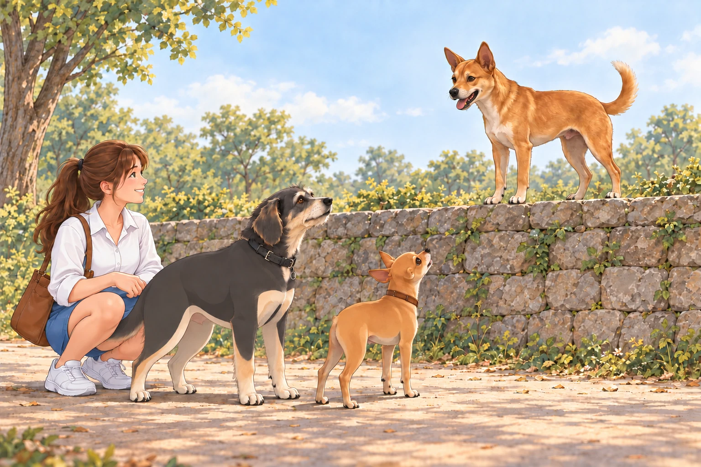
Neet’s ears perked up. “Field trip?” he barked. “Like an adventure?”
Chirag nodded. “We’re going to the bazaar.”
Buddy gulped. “That place is chaos.” He wanted to ask one sensible question, understand the answer, and leave with everybody he had arrived with. Already this sounded ambitious.
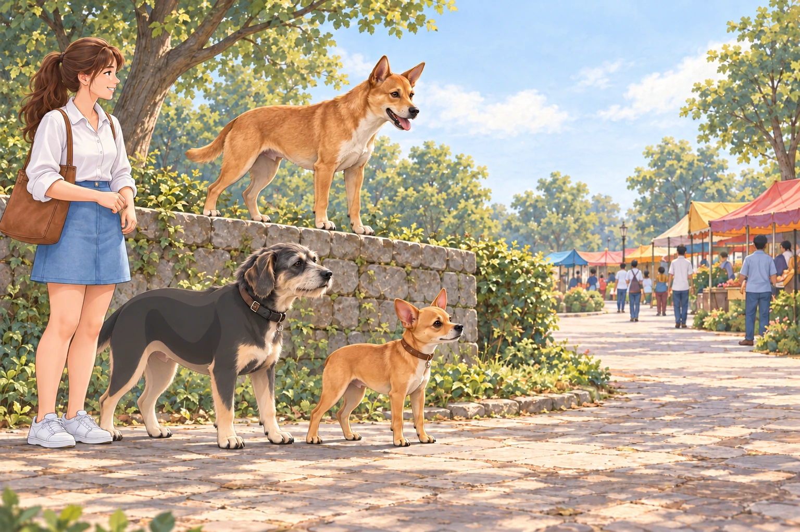
At the park he had managed a greeting. A greeting did not require anybody to hand over a banana or calculate a price. There, he would have to be heard above the shouting first.
Chirag grinned. “Exactly. And the best way to learn a language is to dive right in. If you can survive the bazaar, you can survive anywhere.”
“Could we learn somewhere that doesn't require surviving?” Buddy asked.
Neet was already standing beneath the wall. “Does the field trip include food?”
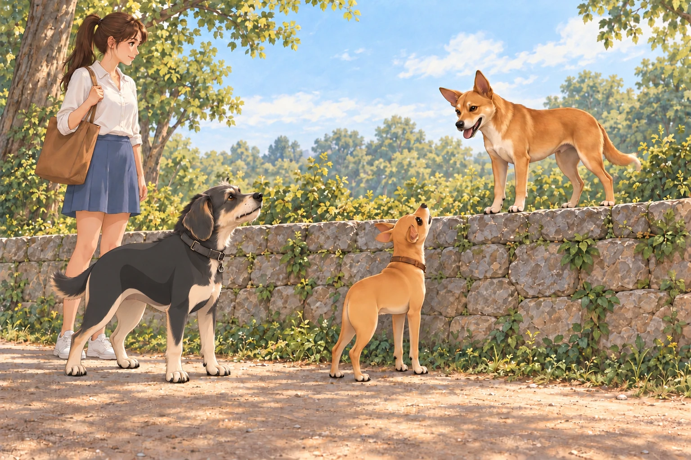
“It includes practical conversation.”
Neet looked at Buddy. “That's what they call it before the food.”
Heather, who had agreed to supervise, clipped their leashes on. “Alright, boys, let’s go practice some Gujarati in the wild.”
She waited while Buddy nosed her hand, then rubbed his cheek and took both leash loops securely. Neet pointed himself toward the bazaar before Chirag had climbed down from the wall.
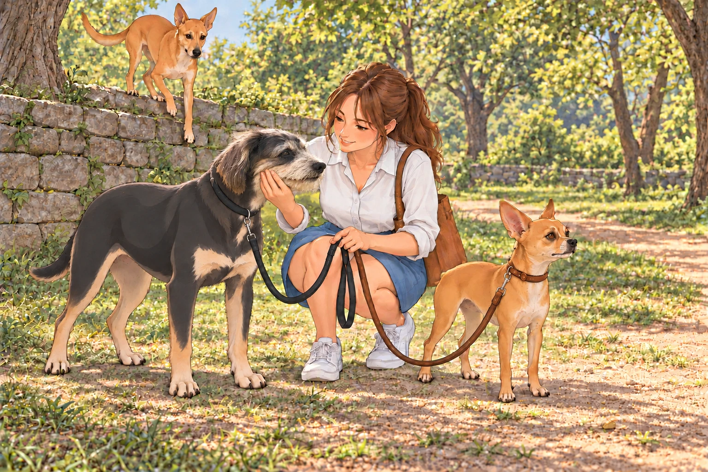
“Stay together,” Buddy said.
“Of course,” Neet replied. “You can carry what I get.”
Welcome to the Jungle
As soon as they arrived at the bustling bazaar, Neet’s senses went into overdrive. The air was thick with the scent of sizzling samosas, fresh coriander, and spices so strong they made Buddy sneeze. Vendors shouted over one another, bargaining furiously.
Buddy stepped closer to Heather. Two people seemed to be disagreeing over a basket, but both were smiling. He couldn't yet tell which noises meant trouble and which meant shopping.
Neet could. All the interesting noises came from beside food.
Chirag turned to his students. “Lesson one: If you want to buy something, you say, ‘Ketla paisa?’— which means ‘How much?’”
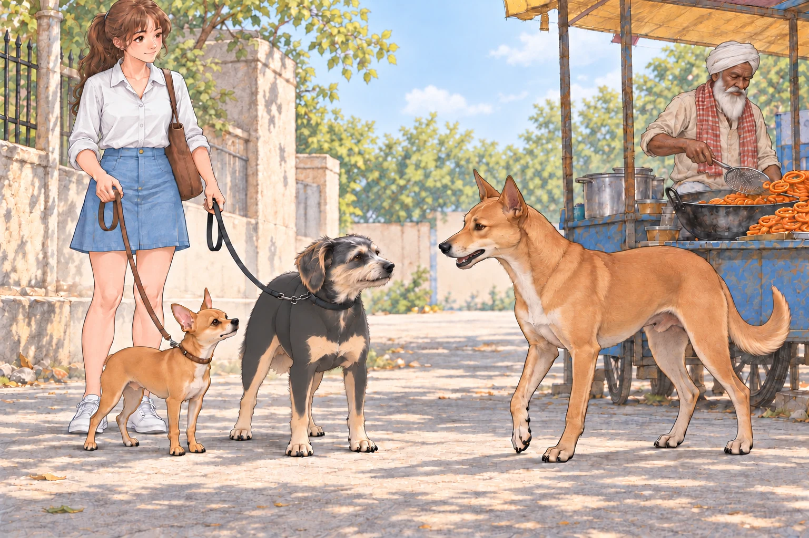
Neet nodded. “Got it. Ketla paisa. Easy.”
Chirag smirked. “Go ahead, try it.”
Neet, seeing an elderly vendor frying jalebis, puffed out his chest and strutted forward. “Cheeseburger paisa?” he barked.
The vendor blinked. “Soo?”
Buddy snorted. “Neet, that’s not even close.”
The vendor, laughing, reached down and patted Neet’s head. “Aa kutro to majedar che!” (This dog is hilarious!)
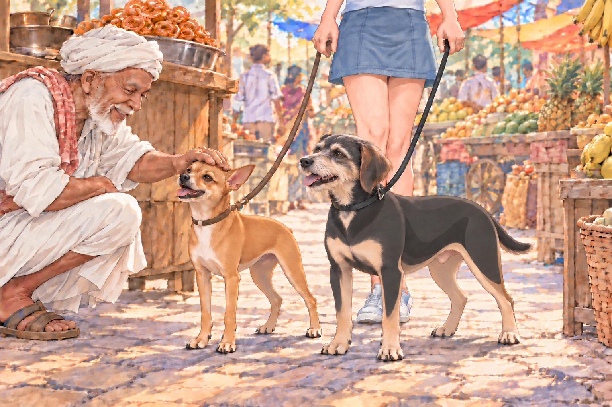
Neet turned to Chirag. “See? They love me.”
Chirag facepawed. “Let’s try again.”
Neet held his head beneath the vendor’s hand for one last pat. “Same question?”
“Different words.”
Buddy decided to demonstrate. He moved beside Neet, looked up at the vendor, and opened his mouth.
The vendor smiled and patted Buddy too.
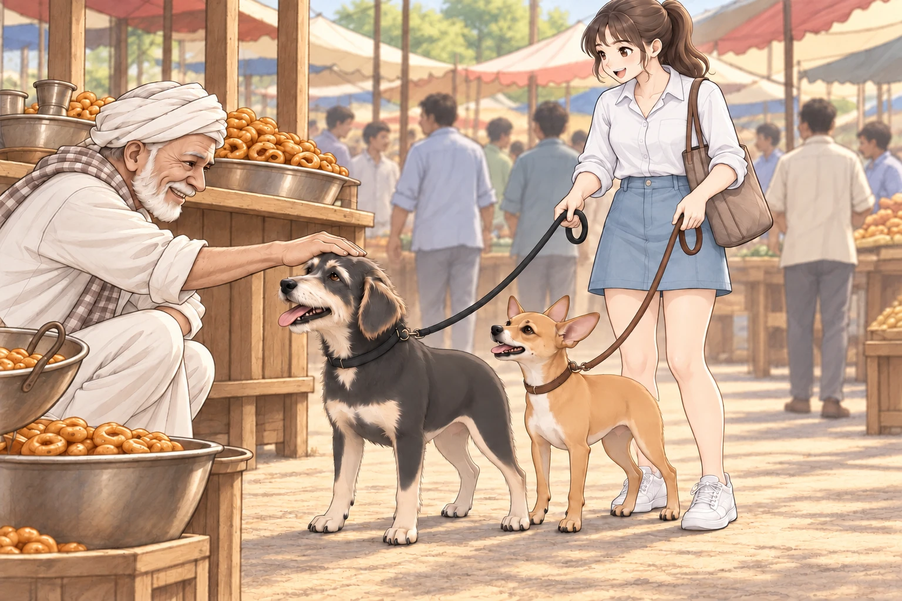
Buddy's mouth stayed open for a moment. This was pleasant, but it wasn't the answer to a question he hadn't asked yet.
Neet leaned toward him. “You don't even have to say the cheeseburger.”
“I haven't started.”
A customer called from the other end of the stall. The vendor returned to his frying, and Heather gently drew the dogs back to leave room. Buddy followed, carrying the exact question in his head and nothing useful to do with it.
Chirag looked at both of them. “You have to get somebody's attention first.”
“I did,” Neet said.
“Then ask the question.”
“I did.”
Buddy glanced back at the jalebis. Neet had done nearly everything wrong, and they had both received head pats. Buddy needed a better experiment.
Bargaining Gone Wrong
As they moved deeper into the bazaar, Chirag decided it was time for them to try bargaining. “Lesson two: If something is too expensive, you say, ‘Bahuj mahengoo chhe!’— which means ‘That’s too expensive!’”
Buddy stopped. “Shouldn't we find out how much it costs first?”
Neet grinned. “I love haggling.” He marched up to a fruit vendor selling bananas and confidently barked, “Bahuj mango chhe!”
The fruit seller raised an eyebrow. “Tamne aamli joiye che?” (You want tamarind?)
Neet turned to Chirag. “What did I say?”
Chirag sighed. “You just yelled ‘very mango’ at him.”
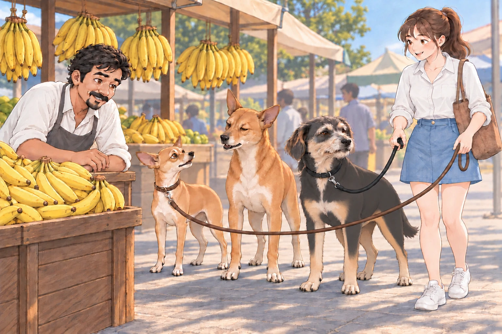
Buddy laughed, then tried the price question himself. This time he waited until the vendor was looking at him and nodded toward the bananas before speaking. “Ketla paisa?”
The vendor held up two fingers. It was the first answer all morning that had involved an actual price.
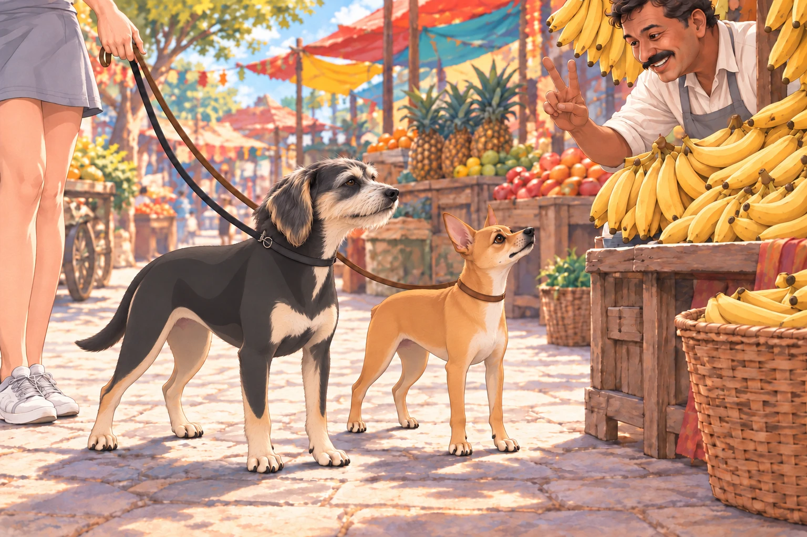
Buddy looked at Chirag. Chirag nodded. Buddy stood a little straighter. No fruit had been insulted.
Neet inspected the two fingers, then the bananas. “Are those the ones you get?”
“It's an answer,” Buddy said.
“An answer to what you get?”
“To what it costs.”
Neet considered this arrangement. It seemed to include an unnecessary stage.
The vendor, clearly amused, tossed Neet a banana. “Aa lo, king of mangoes.”
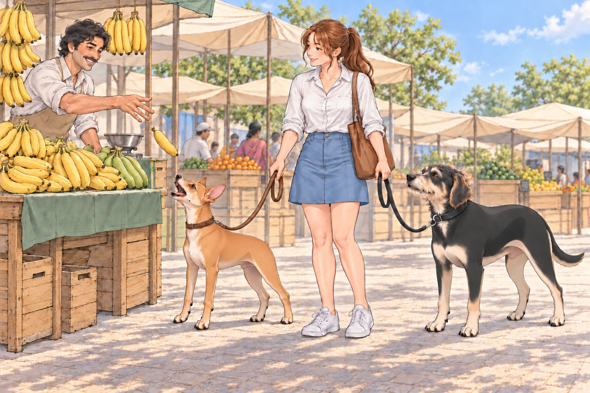
Neet happily chomped on it. “I think I’m getting the hang of this.”
Buddy looked from his correct answer to Neet’s banana.
“I got the price,” he said.
Neet finished chewing. “I got the banana.”
Heather peeled back the rest of the skin before Neet could include it in his victory. “Your tutor deserves a raise.” Chirag looked hopeful until she added, “Or a lie-down.”
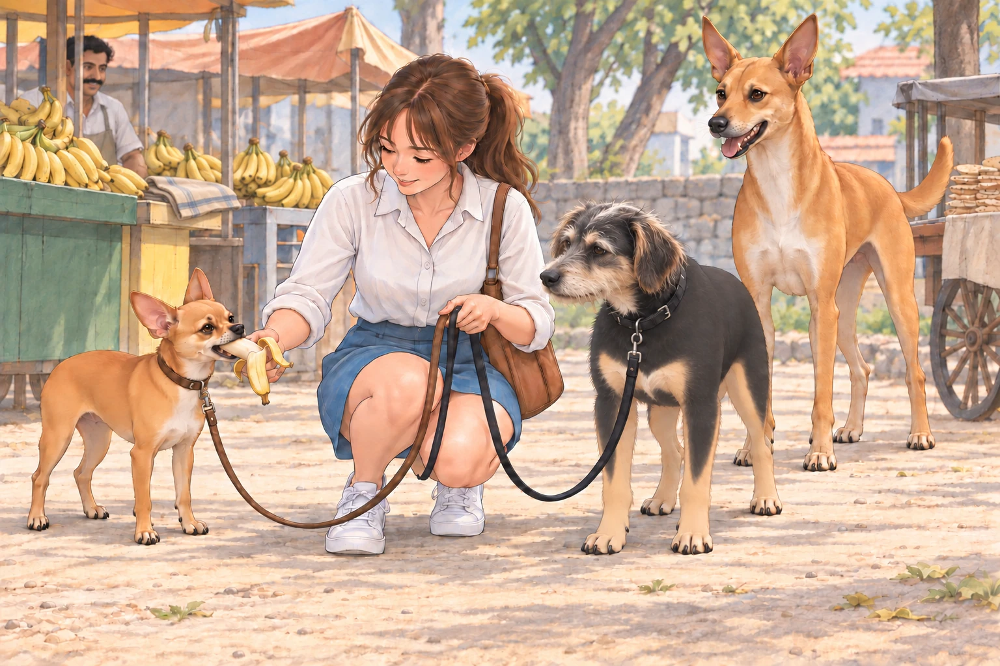
She bought a few bananas for her bag, counted out the money, and thanked the vendor. Buddy watched the exchange. The question was only the beginning. Heather still had to do something afterward.
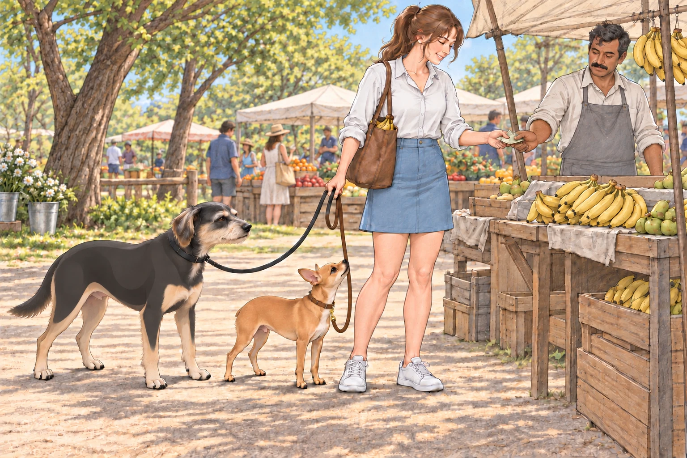
Neet watched too. In his version, Heather had put several future victories in a bag.
“Next time,” Buddy said, “we ask, wait for the answer, and let Heather buy it.”
Neet swallowed the last bite. “I could wait.”
Buddy looked encouraged.
“If it's already in my mouth,” Neet added.
Waiting for the Answer
Buddy asked Chirag if they could practice one ordinary purchase before attempting any more bargaining. Chirag agreed. He had begun to look like a teacher who would welcome an ordinary anything.
Buddy chose to walk beside Neet instead of behind him. If he waited until Neet had done something, the lesson was already over.
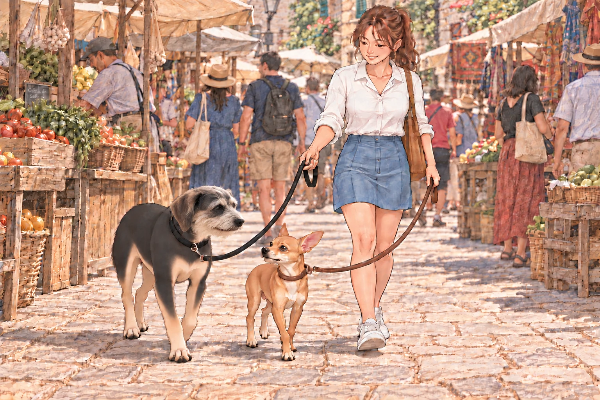
“What are you doing?” Neet asked.
“Helping.”
“You laughed before.”
“I can do both.”
Neet accepted this. It was how he approached most of Buddy's difficulties too.
Everything was going well— until Neet spotted a giant heap of freshly baked chapatis cooling on a cart. His stomach rumbled.
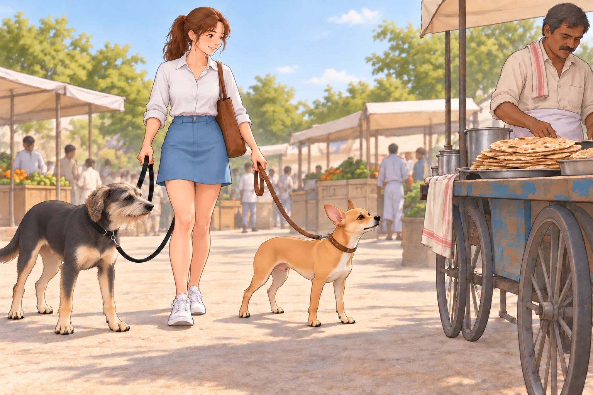
Buddy saw the cart at the same time. Here was an opportunity: something Neet wanted, a vendor who could answer, and Heather with the shopping bag. He stopped at the edge of the stall, pleased with his selection.
A customer was already handing over money. Buddy waited.
Neet edged forward. Heather shortened his slack without disturbing the customer's space.
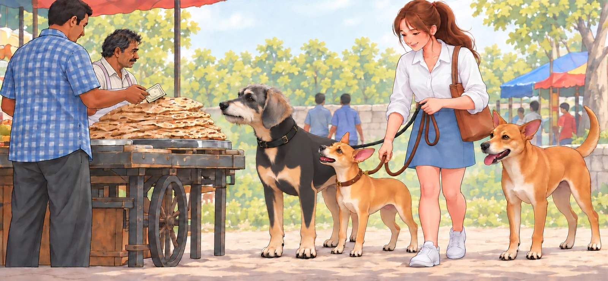
“It's somebody else's turn,” Buddy said.
Neet stared at the chapatis. “They're cooling.”
“They'll still be there.”
“Then why is he taking some?”
The vendor lifted a stack for the customer. Buddy's perfectly sensible experiment was leaving the cart a few chapatis poorer.
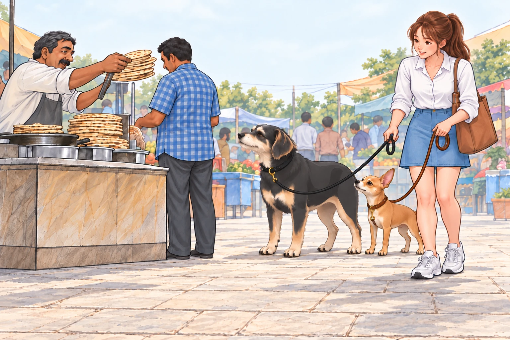
He held his position. “We'll ask when he's finished.”
Neet looked past Buddy to Chirag, who had paused beside the neighboring stall. A vendor was calling him cute. Chirag had turned his head to receive the compliment properly.
“Chirag, what’s the word for ‘I want that’?”
Chirag, distracted by the attention, absentmindedly replied, “Mane joie chhe.”
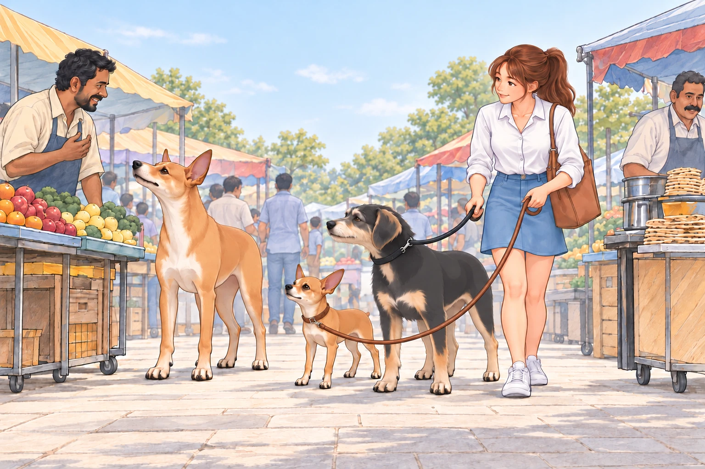
Buddy turned toward him. “We were going to ask the price.”
“I know what I want,” Neet said.
Before Buddy could explain the missing half of the transaction, Neet nodded and marched up to the chapati stall. But instead of politely asking, he lunged forward, barking, “Mane JOIE CHHEEEE!” and grabbed a chapati off the pile.
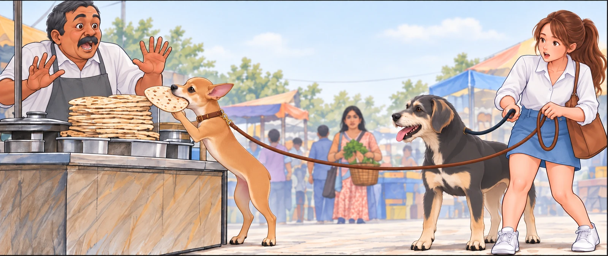
The vendor shrieked. “CHOR KUTRO!” (THIEF DOG!)
The Chase
The entire bazaar turned to look as Neet, chapati flapping from his mouth, bolted. His leash pulled free of Heather’s startled hand. “Neet, no!”
Buddy ran after him, barking for him to stop. He wanted to bring Neet back before the lesson became a search party. Heather kept Buddy's leash in her hand and ran with him, while Neet's loose loop bounced along the ground behind its escaping owner.
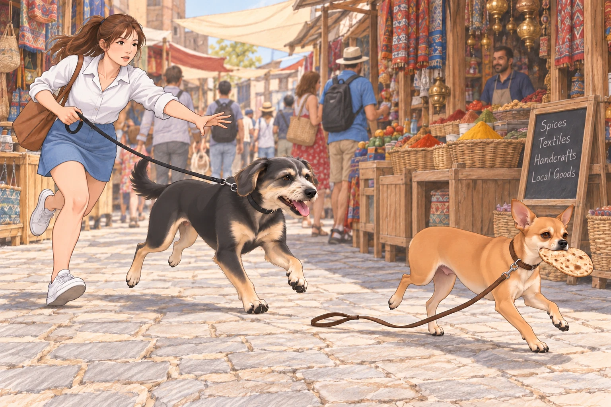
Chirag groaned, “I knew this would happen.”
“Then teach him STOP!” Buddy called back.
The chase was on. Vendors waved rolling pins, customers clutched their groceries, and Heather struggled to keep up. “I should’ve never let you learn words!” she wailed as she ran.
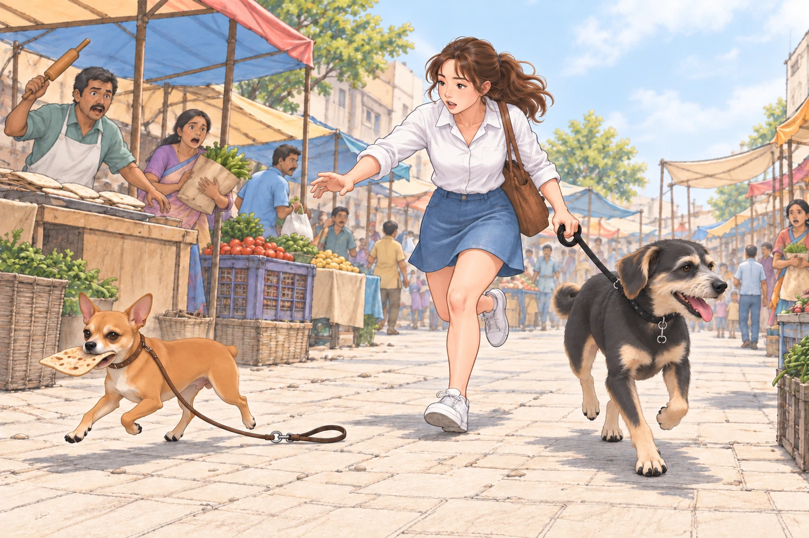
Neet swung around a basket. Buddy followed far enough to see that the turn led into a gap between two crowded stalls. Neet was trying to squeeze through it with his stolen chapati held sideways.
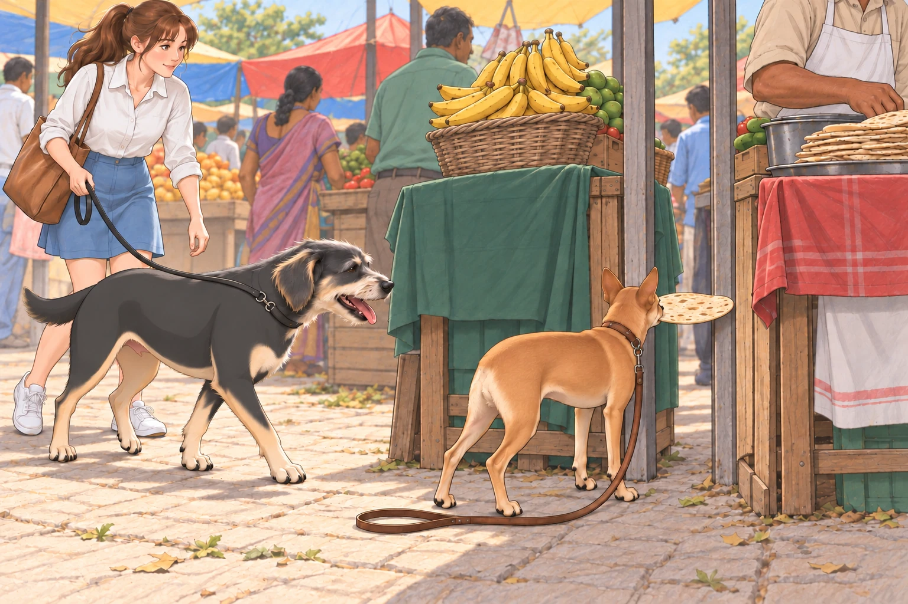
It didn't fit. He backed up, changed the angle of his head, and tried again.
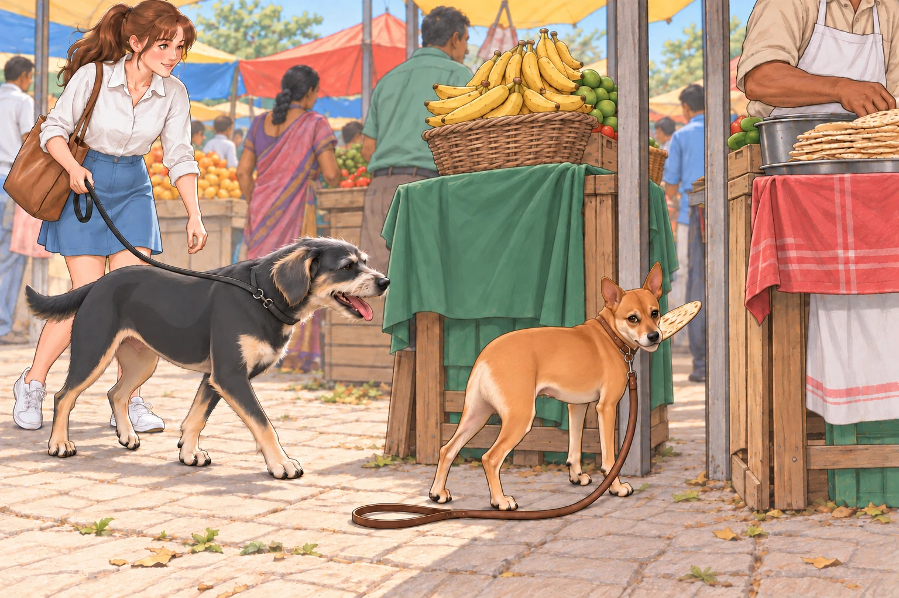
Buddy barked. “Put it down!”
Neet withdrew, keeping the chapati. “Then what was the point of asking?”
Heather rounded the basket. Neet saw her reaching hand and shot back into the lane. Buddy turned with her; he had found Neet, but his sensible instruction had sent him running again.
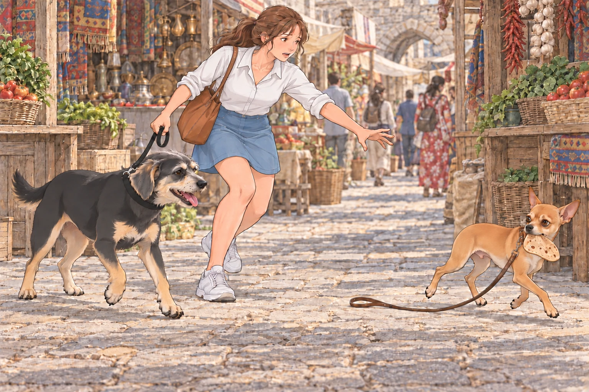
“Stop asking things!” Buddy shouted. “Just stop!”
Finally, Neet skidded to a halt— right in front of a towering cow chewing cud lazily in the middle of the road. The cow stared at Neet. Neet stared at the cow. The chapati slowly slid from his mouth.
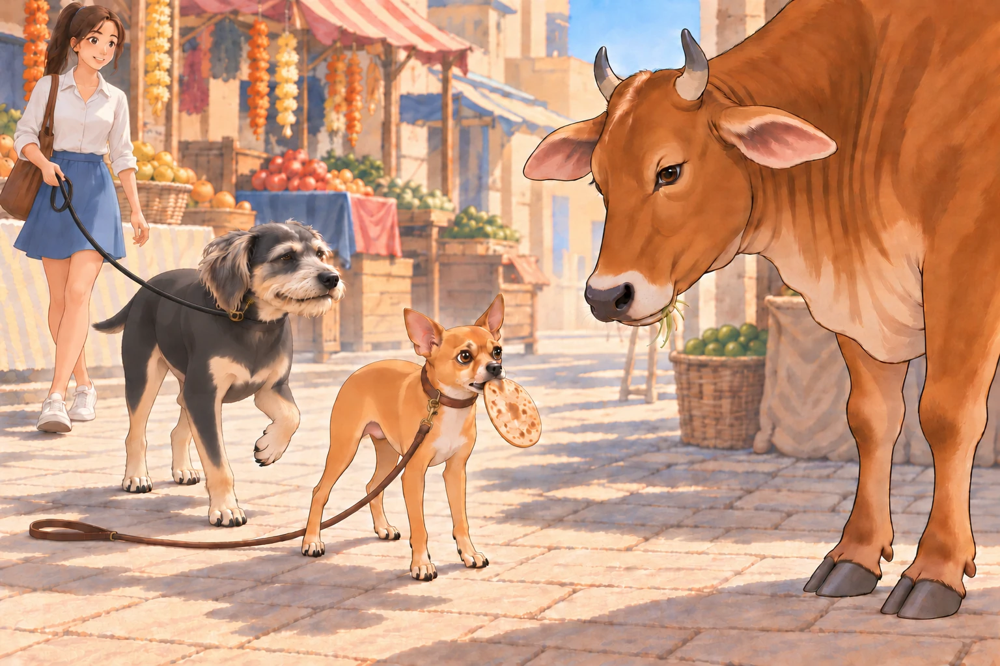
The cow took another slow chew. Buddy stopped behind Neet and waited. For once, he had no improvements to suggest.
The cow snorted.
Neet, humbled by the encounter, dropped the chapati and backed away.
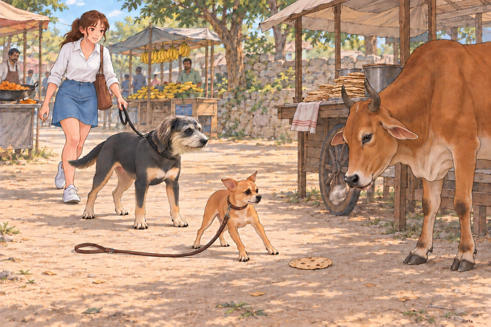
Heather reached them a moment later, gathered Neet's trailing leash, and bent to check him. He stood very still beneath her hand. Buddy pressed against her other leg, quite willing to be checked too.
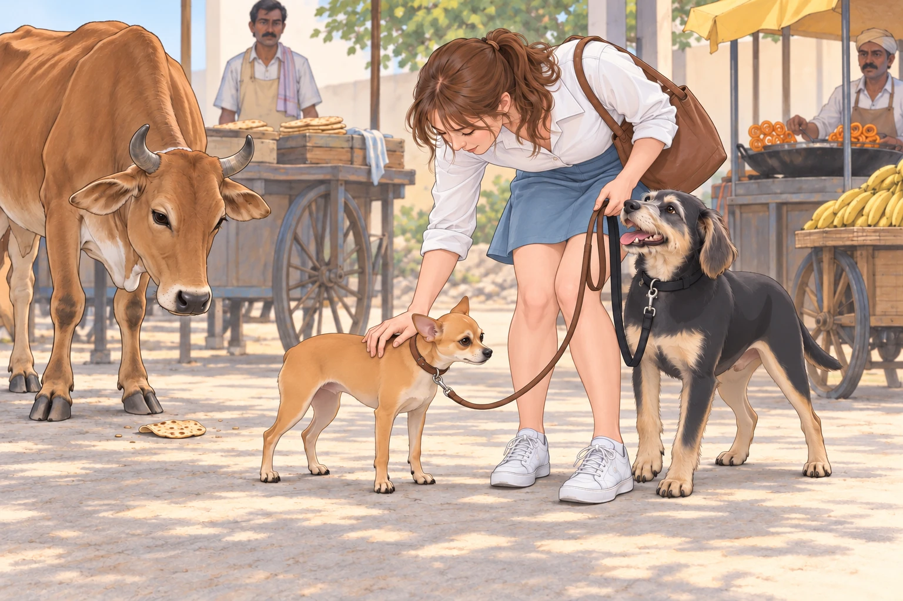
Chirag trotted up, panting. “Lesson three: Never challenge a cow.”
Neet looked back at the cow. It hadn't asked the price either. Buddy decided this was a comparison they could leave alone.
Wrapping Up
Heather apologized to the vendor and paid for the stolen chapati along with a fresh stack. She listened while he pointed from the cart to Neet, then nodded and apologized again. Neet stayed close to her shoe. His next contribution could wait.
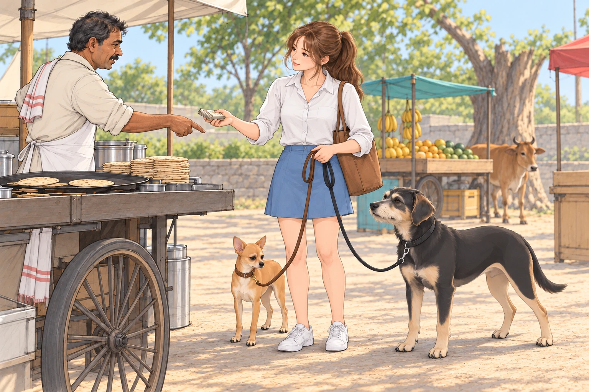
The vendor's shoulders eased. He wrapped the fresh chapatis and handed them to Heather, who accepted them with a grateful smile. The troublesome customer remained on the ground.
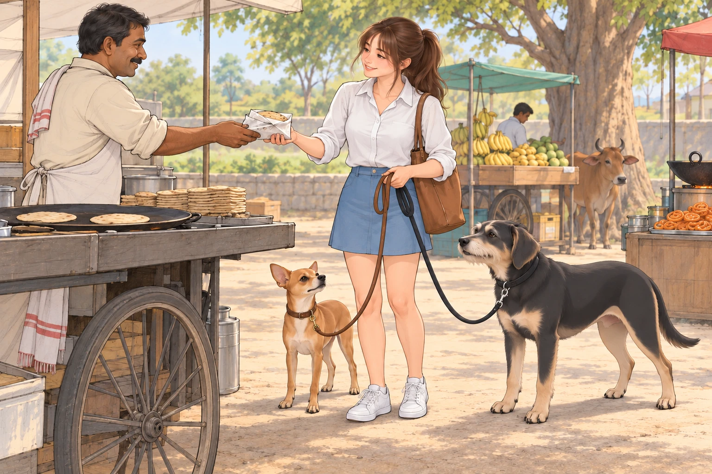
Buddy watched the money change hands. At last, this transaction had reached the missing part. He had hoped to demonstrate it without a chase.
The group sat on a bench to catch their breath. Heather put her bag beside her and rubbed Buddy's shoulder. He leaned against her knee until his breathing slowed. With her other hand, she kept Neet close enough to settle beside him.
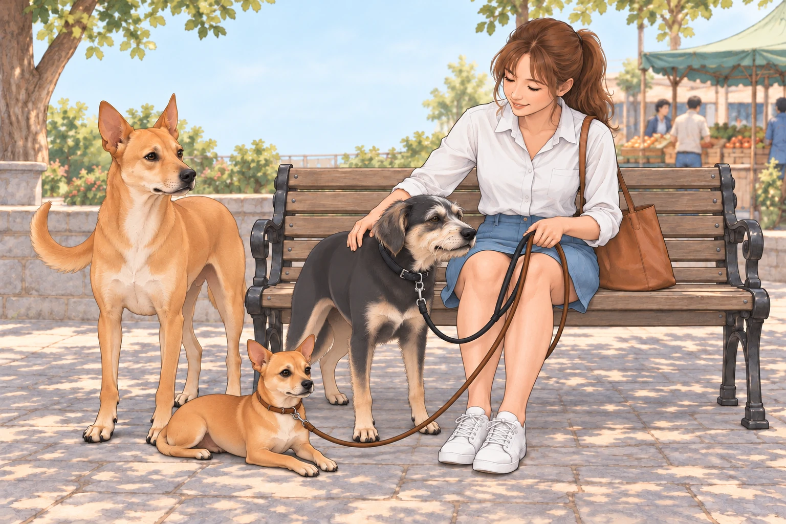
Chirag shook his head. “You two have a long way to go.”
Neet, still catching his breath, wagged his tail. “I think I did great.”
Buddy stretched his forelegs under the bench. “I asked a price. You started a procession.”
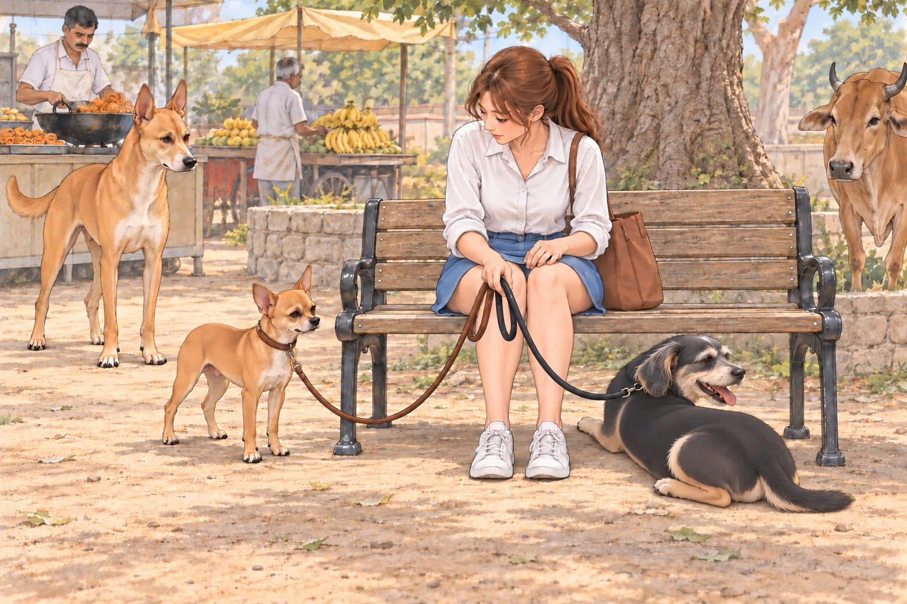
“Very popular,” Neet said.
Heather checked both leash loops around her wrist. “We noticed.”
She took out a banana and peeled it, breaking off a small piece for each dog. Buddy accepted his without asking a question. Neet waited until she offered his piece, although his nose arrived slightly ahead of it.
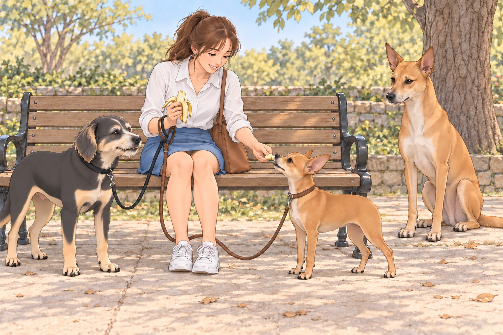
Chirag noticed. So did Buddy. Neither of them interrupted the first successful waiting of the morning.
Heather sighed. “Maybe next time, we’ll just practice at home.”
Buddy stayed beside Heather until the chapatis were safely in her bag. Neet watched the cow move off. It had ended the lesson without learning a single word.
“Perhaps she could teach tomorrow,” Buddy said.
Neet tucked himself closer to Heather. “I prefer our current staff.”
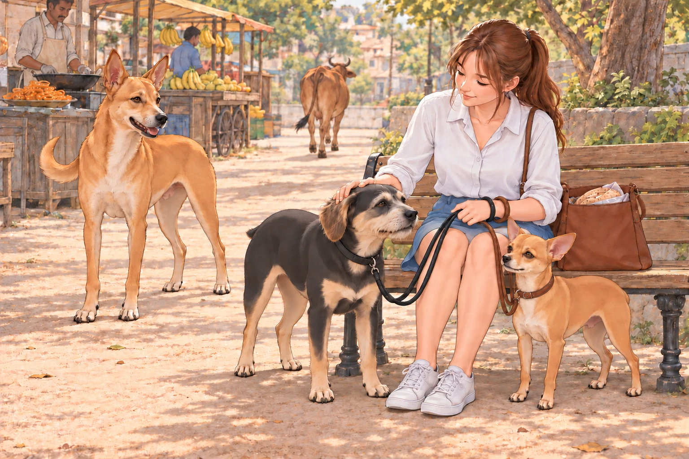